# list of dependencies
packages <- c('tidyverse', 'scales', 'ggcorrplot', 'gghighlight', 'patchwork')
# install if not exists
if(!requireNamespace(packages)){
install.packages(packages)
}
# import libraries
library(tidyverse)
library(scales)
library(ggcorrplot)
library(gghighlight)
library(patchwork)
# set inform off
options(dplyr.summarise.inform=F)HR Analytics: Employee Attrition
Disclaimer: The issue addressed here is fictional, and intended to represent the real issue handled by a data analyst who is assigned a task by a Human Resource Manager. The data used for investigating the issue was taken from Kaggle.
1 Background
Employee attrition (sometimes also called employee turnover), employee’s voluntary or involuntary departure from the current company, is a critical problem in a business if not handled properly. Employee attrition does not only disrupt company’s operation because of time-consuming and expensive new employee hiring and training but also lose invaluable knowledge as the former employees depart. For this reason, turnover remains a core issue in the Human Resource department as a company unit which manages human capital.
Considering keeping great talents is an expensive task, a Human Resource Manager assigned a data analyst to investigate whether the number of people who left the company is worrying, and what are the characteristics of people who leave and stay at the company. She expects the analyst to provide recommendations for maintaining the company’s valuable human assets and/or reducing the number of people who left (or ‘leavers’ for short).
Responding to the task, as a data analyst, I will need a metric to measure the rate of people who left the company in a time period such as turnover rate or attrition rate\(^1\). To get the profiles of the leavers, a number of variables will be taken into account.
2 Data
The dataset consists of 1470 rows and 35 columns after data pre-processing (see below). The pre-processing was done by firstly converting some variables into factors, a type of data objects representing categorical data such as Yes and No in the Attrition column. Next, I needed to convert the data values into easier-to-understand labels. For example, 1 is Low, and 4 is High in the context of job satisfaction score. After doing these steps, I proceeded with checking missing data and duplicates. If NA values and duplicated data were found, some data removals would be required. But they were not found on the dataset so the removals were not done and a data analysis could be carried out.
2.1 Data import
# import dataset
df <-
read_csv("../data/HR-Employee-Attrition.csv", show_col_types = F)
# check top-rows
df[1:5,]# A tibble: 5 × 35
Age Attrition BusinessTravel DailyRate Department DistanceFromHome Education
<dbl> <chr> <chr> <dbl> <chr> <dbl> <dbl>
1 41 Yes Travel_Rarely 1102 Sales 1 2
2 49 No Travel_Freque… 279 Research … 8 1
3 37 Yes Travel_Rarely 1373 Research … 2 2
4 33 No Travel_Freque… 1392 Research … 3 4
5 27 No Travel_Rarely 591 Research … 2 1
# ℹ 28 more variables: EducationField <chr>, EmployeeCount <dbl>,
# EmployeeNumber <dbl>, EnvironmentSatisfaction <dbl>, Gender <chr>,
# HourlyRate <dbl>, JobInvolvement <dbl>, JobLevel <dbl>, JobRole <chr>,
# JobSatisfaction <dbl>, MaritalStatus <chr>, MonthlyIncome <dbl>,
# MonthlyRate <dbl>, NumCompaniesWorked <dbl>, Over18 <chr>, OverTime <chr>,
# PercentSalaryHike <dbl>, PerformanceRating <dbl>,
# RelationshipSatisfaction <dbl>, StandardHours <dbl>, …2.2 Data preprocessing
df_new <-
df %>%
# convert into factors
mutate(
Attrition = as.factor(Attrition),
Education = as.factor(Education),
EnvironmentSatisfaction = as.factor(EnvironmentSatisfaction),
JobInvolvement = as.factor(JobInvolvement),
JobSatisfaction = as.factor(JobSatisfaction),
PerformanceRating = as.factor(PerformanceRating),
RelationshipSatisfaction = as.factor(RelationshipSatisfaction),
WorkLifeBalance = as.factor(WorkLifeBalance),
BusinessTravel = as.factor(BusinessTravel),
MaritalStatus = as.factor(MaritalStatus),
Gender = as.factor(Gender),
JobRole = as.factor(JobRole),
JobLevel = as.factor(JobLevel)
) %>%
# change values
mutate(Education = recode(Education,
"1" = "Below College", "2" = "College",
"3" = "Bachelor", "4" = "Master", `5` = "Doctor"),
EnvironmentSatisfaction = recode(EnvironmentSatisfaction,
"1" = "Low", "2" = "Medium",
"3" = "High", "4" = "Very High"),
JobInvolvement = recode(JobInvolvement,
"1" = "Low", "2" = "Medium",
"3" = "High", "4" = "Very High"),
JobSatisfaction = recode(JobSatisfaction,
"1" = "Low", "2" = "Medium",
"3" = "High", "4" = "Very High"),
PerformanceRating = recode(PerformanceRating,
"1" = "Low", "2" = "Good",
"3" = "Excellent", "4" = "Outstanding"),
RelationshipSatisfaction = recode(RelationshipSatisfaction,
"1" = "Low", "2" = "Medium",
"3" = "High", "4" = "Very High"),
WorkLifeBalance = recode(WorkLifeBalance,
"1" = "Bad", "2" = "Good",
"3" = "Better", "4" = "Best"))# check dimension
dim(df_new)[1] 1470 35# check missing values
df_new %>%
is.na() %>%
sum()[1] 0# check duplicates
df_new %>%
duplicated() %>%
sum()[1] 0# display the snipet of dataset
glimpse(df_new)Rows: 1,470
Columns: 35
$ Age <dbl> 41, 49, 37, 33, 27, 32, 59, 30, 38, 36, 35, 2…
$ Attrition <fct> Yes, No, Yes, No, No, No, No, No, No, No, No,…
$ BusinessTravel <fct> Travel_Rarely, Travel_Frequently, Travel_Rare…
$ DailyRate <dbl> 1102, 279, 1373, 1392, 591, 1005, 1324, 1358,…
$ Department <chr> "Sales", "Research & Development", "Research …
$ DistanceFromHome <dbl> 1, 8, 2, 3, 2, 2, 3, 24, 23, 27, 16, 15, 26, …
$ Education <fct> College, Below College, College, Master, Belo…
$ EducationField <chr> "Life Sciences", "Life Sciences", "Other", "L…
$ EmployeeCount <dbl> 1, 1, 1, 1, 1, 1, 1, 1, 1, 1, 1, 1, 1, 1, 1, …
$ EmployeeNumber <dbl> 1, 2, 4, 5, 7, 8, 10, 11, 12, 13, 14, 15, 16,…
$ EnvironmentSatisfaction <fct> Medium, High, Very High, Very High, Low, Very…
$ Gender <fct> Female, Male, Male, Female, Male, Male, Femal…
$ HourlyRate <dbl> 94, 61, 92, 56, 40, 79, 81, 67, 44, 94, 84, 4…
$ JobInvolvement <fct> High, Medium, Medium, High, High, High, Very …
$ JobLevel <fct> 2, 2, 1, 1, 1, 1, 1, 1, 3, 2, 1, 2, 1, 1, 1, …
$ JobRole <fct> Sales Executive, Research Scientist, Laborato…
$ JobSatisfaction <fct> Very High, Medium, High, High, Medium, Very H…
$ MaritalStatus <fct> Single, Married, Single, Married, Married, Si…
$ MonthlyIncome <dbl> 5993, 5130, 2090, 2909, 3468, 3068, 2670, 269…
$ MonthlyRate <dbl> 19479, 24907, 2396, 23159, 16632, 11864, 9964…
$ NumCompaniesWorked <dbl> 8, 1, 6, 1, 9, 0, 4, 1, 0, 6, 0, 0, 1, 0, 5, …
$ Over18 <chr> "Y", "Y", "Y", "Y", "Y", "Y", "Y", "Y", "Y", …
$ OverTime <chr> "Yes", "No", "Yes", "Yes", "No", "No", "Yes",…
$ PercentSalaryHike <dbl> 11, 23, 15, 11, 12, 13, 20, 22, 21, 13, 13, 1…
$ PerformanceRating <fct> Excellent, Outstanding, Excellent, Excellent,…
$ RelationshipSatisfaction <fct> Low, Very High, Medium, High, Very High, High…
$ StandardHours <dbl> 80, 80, 80, 80, 80, 80, 80, 80, 80, 80, 80, 8…
$ StockOptionLevel <dbl> 0, 1, 0, 0, 1, 0, 3, 1, 0, 2, 1, 0, 1, 1, 0, …
$ TotalWorkingYears <dbl> 8, 10, 7, 8, 6, 8, 12, 1, 10, 17, 6, 10, 5, 3…
$ TrainingTimesLastYear <dbl> 0, 3, 3, 3, 3, 2, 3, 2, 2, 3, 5, 3, 1, 2, 4, …
$ WorkLifeBalance <fct> Bad, Better, Better, Better, Better, Good, Go…
$ YearsAtCompany <dbl> 6, 10, 0, 8, 2, 7, 1, 1, 9, 7, 5, 9, 5, 2, 4,…
$ YearsInCurrentRole <dbl> 4, 7, 0, 7, 2, 7, 0, 0, 7, 7, 4, 5, 2, 2, 2, …
$ YearsSinceLastPromotion <dbl> 0, 1, 0, 3, 2, 3, 0, 0, 1, 7, 0, 0, 4, 1, 0, …
$ YearsWithCurrManager <dbl> 5, 7, 0, 0, 2, 6, 0, 0, 8, 7, 3, 8, 3, 2, 3, …# export dataset into csv
# write_csv(df_new, file="HR-Employee-Attrition-Preprocessed.csv")3 Metrics
Because the issue is employee attrition, metrics which will be used here is the staffing metric, particularly attrition rate which can be calculated with this following formula:
$$ = %
$$
- n of leavers: number of people who leave the company at a period of time
- total n of employees: overall number of employees (stayers + leavers)
4 Exploratory Data Analysis
4.1 Attrition rate
# get the n of employees
df_new %>%
nrow()[1] 1470# get the n of leavers
df_new %>%
filter(Attrition == "Yes") %>%
nrow()[1] 237# calculate attrition rate
n_leavers <- 237
n_employees <- 1470
attrition_rate = (n_leavers/n_employees)*100
attrition_rate = round(attrition_rate, 2)
paste0("The attrition rate is ", attrition_rate, "%")[1] "The attrition rate is 16.12%"# get the n of stayers
n_employees - n_leavers[1] 1233# get median and mean
df_new %>%
group_by(Attrition) %>%
summarise(mean_YearsAtCompany = mean(YearsAtCompany),
median_YearsAtCompany = median(YearsAtCompany)) # A tibble: 2 × 3
Attrition mean_YearsAtCompany median_YearsAtCompany
<fct> <dbl> <dbl>
1 No 7.37 6
2 Yes 5.13 3attrition_rate_viz <-
data.frame(
x = c(2, 8.5, 15, 21.5),
y = c(6.5, 6.5, 6.5, 6.5),
h = c(4.25, 4.25, 4.25, 4.25),
w = c(6.25, 6.25, 6.25, 6.25),
value = c("273", "1,233", "16.12%", "3 years"),
info = c("People who leave", "People who stay",
"Attrition rate", "Median of years \n(leavers)"),
font_family = c("fontawesome-webfont",
"fontawesome-webfont",
"fontawesome-webfont",
"fontawesome-webfont"),
color = factor(1:4)
)
ggplot(attrition_rate_viz, aes(x=x, y=y, height = h,
width = w, label = info)) +
geom_tile(aes(fill = color), alpha=1) +
geom_text(color = "white", fontface = "bold", size = 7,
aes(label = value, x = x - 2.5, y = y + 1), hjust = 0) +
geom_text(color = "white", fontface = "bold",
aes(label = info, x = x - 2.5, y = y - 0.7),
hjust = 0, size = 4) + coord_fixed() +
scale_fill_brewer(type = "qual", palette = "Dark2") +
theme_void() + guides(fill = "none") 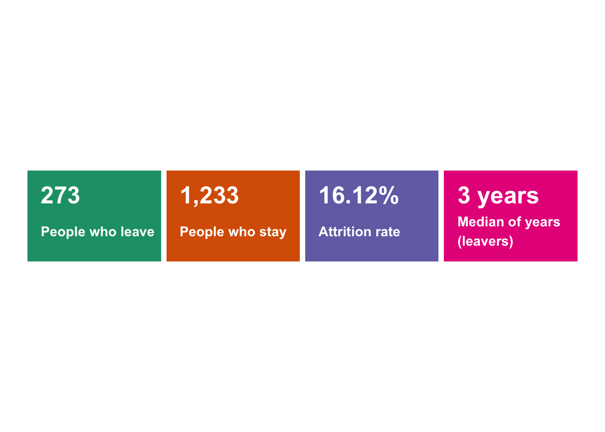
Insights:
- The attrition rate is 16.12% which is obtained from dividing the number of people who leave (273) with the number of people who stay (1,233).
- People leave the company normally around 3 years.
- Considering the attrition rate, this number is quite alerting although different industries have different baselines to indicate high and low (e.g., see Praisidio.com) as the baselines of attrition rates in different industries are below 10.
4.2 Attrition rate: Stayers vs leavers
# Attrition cases
df_new %>%
group_by(Attrition) %>%
summarise(cases = n()) %>%
mutate(percentage = (cases/sum(cases))*100,
percentage = round(percentage, 0)) %>%
ggplot(aes(x=Attrition, y=percentage, fill=Attrition)) +
geom_col(color="black") + theme_bw() +
geom_text(aes(label=paste0(percentage, "%"), vjust=3.5),
color="black", size = 3) +
scale_fill_brewer(palette="Pastel1") +
# scale_x_discrete(labels=c("Stayers", "Leavers")) +
theme(panel.border = element_blank(),
axis.line = element_line(color="black"),
panel.grid = element_blank(),
plot.title = element_text(hjust = 0.5),
legend.position = "none") +
labs(title = "Overall attrition rate",
caption = "Data source: Kaggle",
y = "Percentage")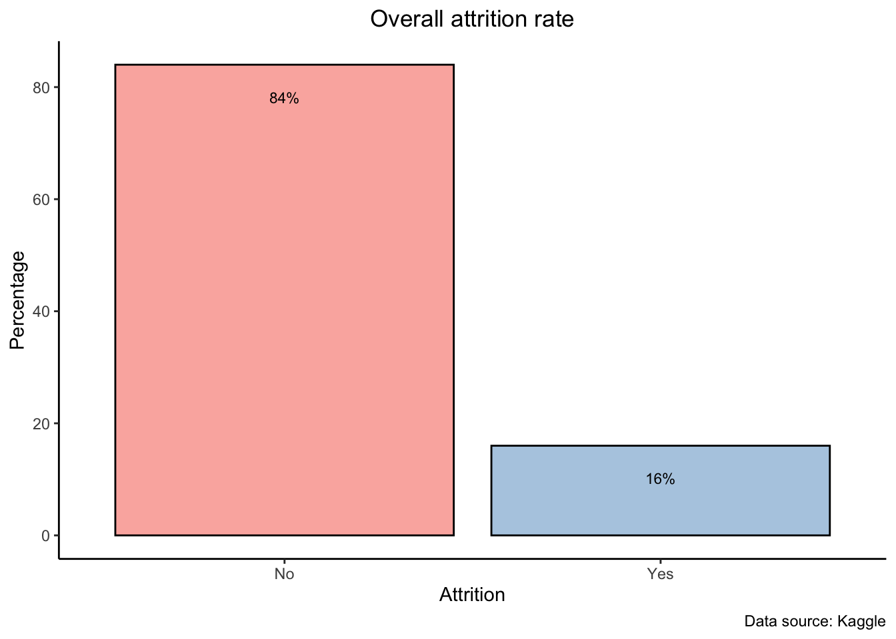
Insights:
The percentage of leavers (attrition rate) is 1/5 of the percentage of stayers (retention rate).
This number further clarifies of the previous finding which only indicates the attrition rate.
4.3 Attrition rate by variables: Department, JobRole, & JobLevel
# Attrition rate by Department
df_new %>%
group_by(Department, Attrition) %>%
summarise(cases = n()) %>%
mutate(percentage = (cases/sum(cases))*100,
percentage = round(percentage, 0)) %>%
ggplot(aes(x=Department, y=percentage,
fill=Attrition)) +
geom_col(color = "black") + theme_bw() +
geom_text(aes(label=paste0(percentage, "%")),
size=3, position=position_stack(vjust=0.5)) +
scale_fill_brewer(palette="Pastel1") +
theme(panel.border = element_blank(),
axis.line = element_line(color="black"),
panel.grid = element_blank(),
plot.title = element_text(hjust = 0.5)) +
labs(title = "Attrition rate by Department",
caption = "Data source: Kaggle",
y = "Percentage")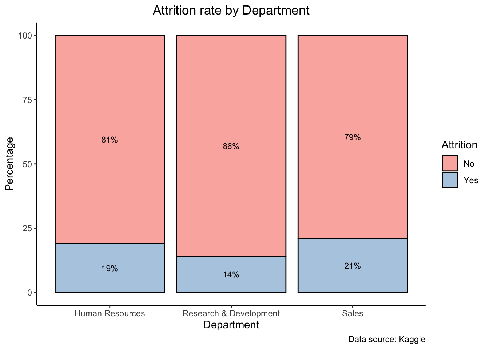
# Attrition rate by JobRole
df_new %>%
group_by(JobRole, Attrition) %>%
summarise(cases = n()) %>%
mutate(percentage = (cases/sum(cases))*100,
percentage = round(percentage, 0)) %>%
ggplot(aes(x=JobRole, y=percentage, fill=Attrition)) +
geom_col(color="black") + coord_flip() + theme_bw() +
geom_text(size=3, position=position_stack(vjust=0.5),
aes(label=paste0(percentage, "%"))) +
scale_fill_brewer(palette="Pastel1") +
theme(panel.border = element_blank(),
axis.line = element_line(color="black"),
panel.grid = element_blank(),
plot.title = element_text(hjust = 0.5)) +
labs(title = "Attrition rate by JobRole",
caption = "Data source: Kaggle",
y = "Percentage")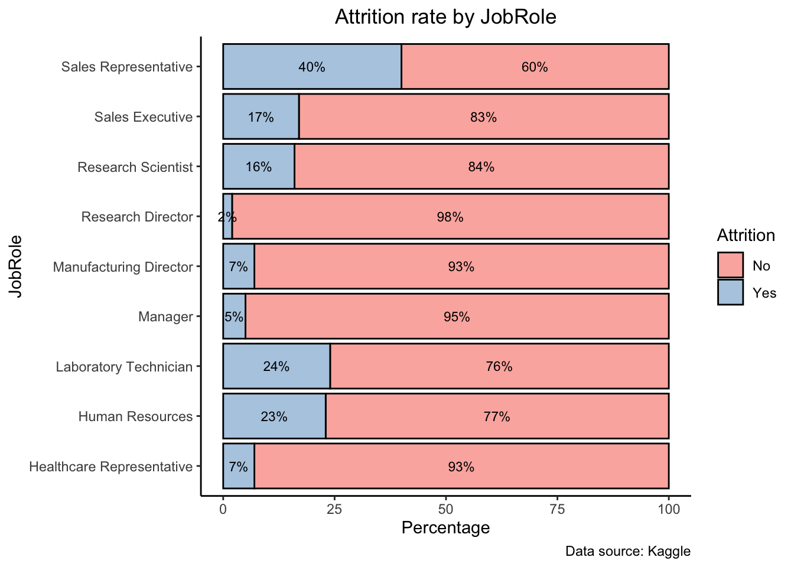
# Attrition rate by JobLevel
df_new %>%
group_by(JobLevel, Attrition) %>%
summarise(cases = n()) %>%
mutate(percentage = (cases/sum(cases))*100,
percentage = round(percentage, 0)) %>%
ggplot(aes(x=JobLevel, y=percentage, fill=Attrition)) +
geom_col(color="black") + theme_bw() +
geom_text(size=3, position=position_stack(vjust=0.5),
aes(label=paste0(percentage, "%"))) +
scale_fill_brewer(palette="Pastel1") +
labs(title="Attrition by JobLevel", y="Percentage",
caption="Data source: Kaggle") +
theme(plot.title = element_text(hjust=0.5),
panel.grid = element_blank(),
panel.border = element_blank(),
axis.line = element_line(color="black"))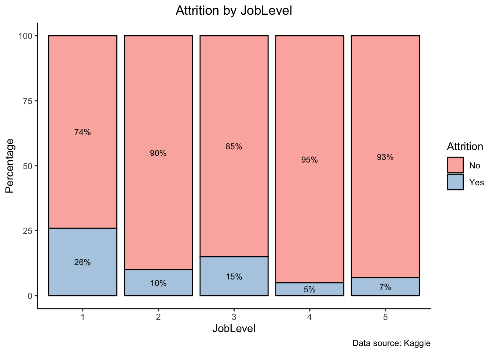
Insights:
In general, the leavers are predominantly Sales Representatives from the Sales Department, and followed by Laboratory Technicians from the R&D Department.
On the contrary to Laboratory Technicians, Research Directors from the same department are roles with the lowest attrition rate (2% within its category).
Mostly, employees who leave the company are those who are new entries or juniors.
4.4 Attrition rate by BusinessTravel, WorkLifeBalance, PerformanceRating, EnvironmentSatisfaction, & OverTime
# Attrition rate by BusinessTravel
df_new %>%
group_by(BusinessTravel, Attrition) %>%
summarise(cases = n()) %>%
mutate(percentage = (cases/sum(cases))*100,
percentage = round(percentage, 0)) %>%
ggplot(aes(x=BusinessTravel, y=percentage,
fill=Attrition)) +
geom_col(color = "black") + theme_bw() +
geom_text(size=3, position=position_stack(vjust=0.5),
aes(label=paste0(percentage, "%"))) +
scale_fill_brewer(palette="Pastel1") +
theme(panel.border = element_blank(),
axis.line = element_line(color="black"),
panel.grid = element_blank(),
plot.title = element_text(hjust = 0.5)) +
labs(title = "Attrition rate by BusinessTravel",
caption = "Data source: Kaggle",
y = "Percentage")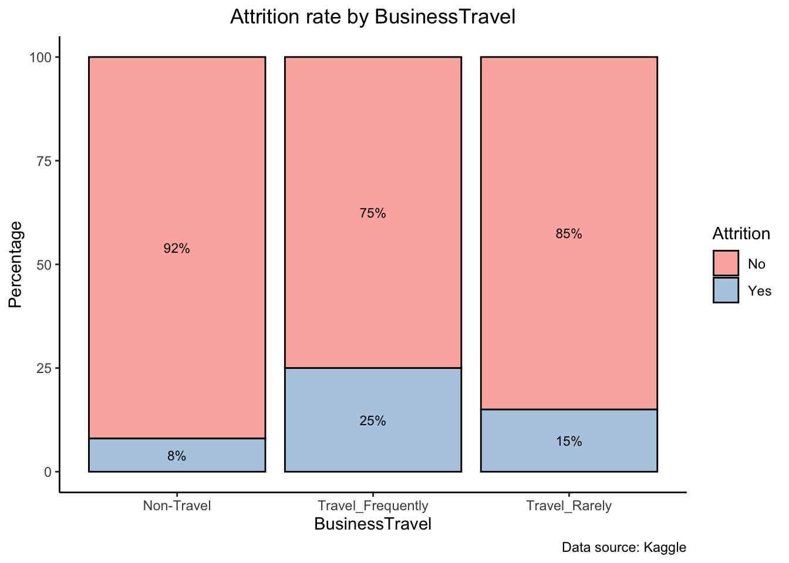
# Attrition rate by WorkLifeBalance
df_new %>%
group_by(WorkLifeBalance, Attrition) %>%
summarise(cases = n()) %>%
mutate(percentage = (cases/(sum(cases)))*100,
percentage = round(percentage, 0)) %>%
ggplot(aes(x=WorkLifeBalance, y=percentage, fill=Attrition)) +
geom_col(color="black") + theme_bw() +
geom_text(size=3, position=position_stack(vjust=0.5),
aes(label=paste0(percentage, "%"))) +
scale_fill_brewer(palette = "Pastel1") +
theme(panel.border = element_blank(),
panel.grid = element_blank(),
axis.line = element_line(color="black"),
plot.title = element_text(hjust=0.5)) +
labs(title = "Attrition rate by WorkLifeBalance",
caption = "Data source: Kaggle",
y = "Percentage")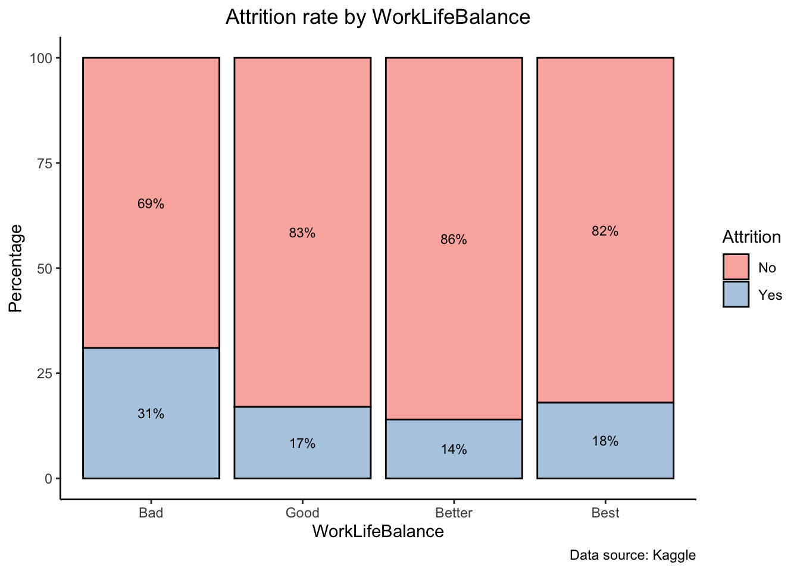
# Attrition rate by PerformanceRating
df_new %>%
group_by(PerformanceRating, Attrition) %>%
summarise(cases = n()) %>%
mutate(percentage = (cases/sum(cases))*100,
percentage = round(percentage, 0)) %>%
ggplot(aes(x=PerformanceRating, y=percentage, fill=Attrition)) +
geom_col(color="black") + theme_bw() +
geom_text(aes(label=paste0(percentage, "%")), size=3,
position=position_stack(vjust=0.5)) +
scale_fill_brewer(palette="Pastel1") +
labs(title="Attrition rate by PerformanceRating",
y = "Percentage",
caption="Data source: Kaggle") +
theme(plot.title = element_text(hjust=0.5),
panel.grid = element_blank(),
panel.border = element_blank(),
axis.line = element_line(color="black"))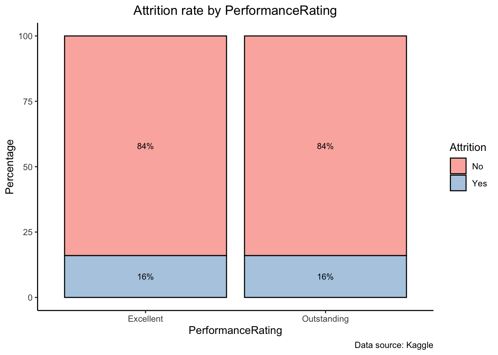
# Attrition rate by JobInvolvement
df_new %>%
group_by(JobInvolvement, Attrition) %>%
summarise(cases = n()) %>%
mutate(percentage = (cases/sum(cases))*100,
percentage = round(percentage)) %>%
ggplot(aes(x=JobInvolvement, y=percentage, fill=Attrition)) +
geom_col(color="black") + theme_bw() +
geom_text(aes(label=paste0(percentage, "%")), size=3,
position = position_stack(vjust=0.5)) +
scale_fill_brewer(palette="Pastel1") +
labs(title="Attrition rate by JobInvolvement",
y = "Percentage",
caption="Data source: Kaggle") +
theme(plot.title = element_text(hjust=0.5),
panel.grid = element_blank(),
panel.border = element_blank(),
axis.line = element_line(color="black"))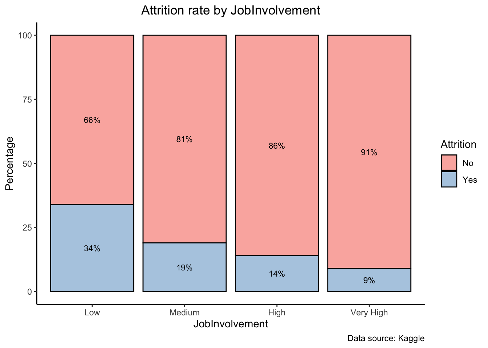
# Attrition by EnvironmentSatisfaction
df_new %>%
group_by(EnvironmentSatisfaction, Attrition) %>%
summarise(cases = n()) %>%
mutate(percentage = (cases/sum(cases))*100,
percentage = round(percentage, 0)) %>%
ggplot(aes(x=EnvironmentSatisfaction, y = percentage,
fill = Attrition)) +
geom_col(color="black") + theme_bw() +
geom_text(size=3, position=position_stack(vjust=0.5),
aes(label=paste0(percentage, "%"))) +
scale_fill_brewer(palette="Pastel1") +
theme(panel.border = element_blank(),
axis.line = element_line(color="black"),
panel.grid = element_blank(),
plot.title = element_text(hjust = 0.5)) +
labs(title = "Attrition rate by EnvironmentSatisfaction",
caption = "Data source: Kaggle",
y = "Percentage")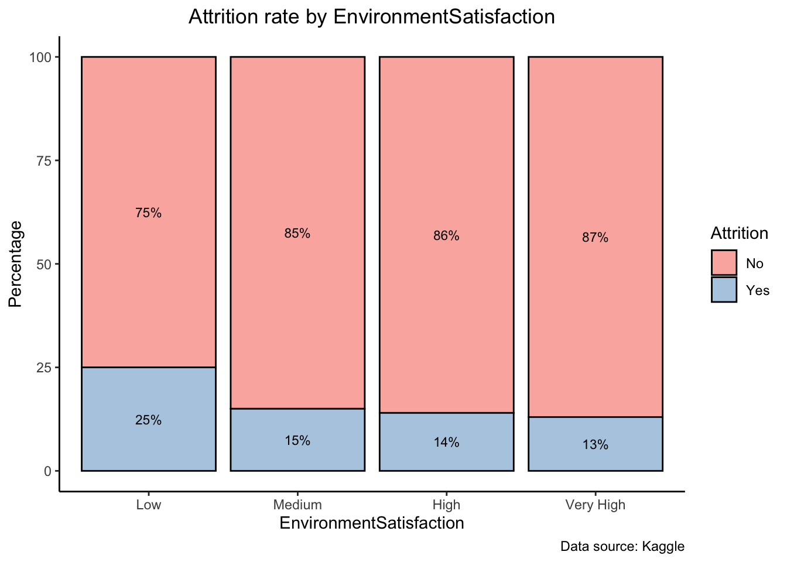
# Attrition cases by OverTime
df_new %>%
group_by(OverTime, Attrition) %>%
summarise(count = n()) %>%
mutate(percentage = (count/sum(count)*100),
percentage = round(percentage, 0)) %>%
ggplot(aes(x=OverTime, y=percentage, fill=Attrition)) +
geom_col(color="black") + theme_bw() +
geom_text(size=3, position=position_stack(vjust=0.5),
aes(label=paste0(percentage, "%"))) +
scale_fill_brewer(palette="Pastel1") +
theme(panel.border = element_blank(),
axis.line = element_line(color="black"),
panel.grid = element_blank(),
plot.title = element_text(hjust = 0.5)) +
labs(title = "Attrition rate by OverTime",
caption = "Data source: Kaggle",
y = "Percentage")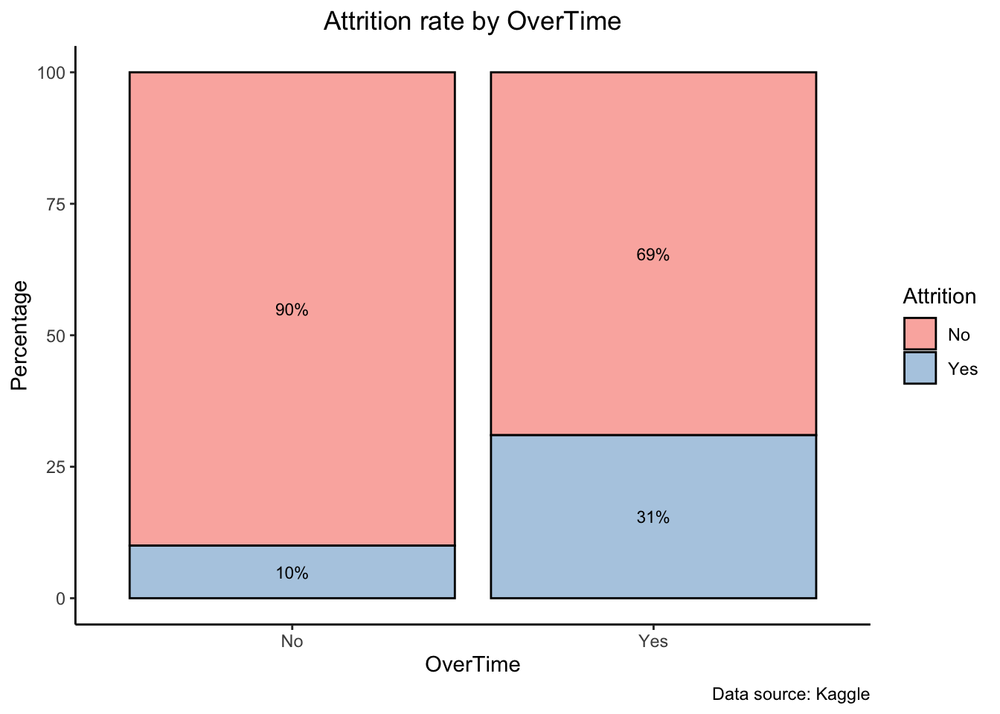
Insights:
BusinessTravel: People who leave the company are mostly those who travel frequentlyWorkLifeBalance: People who have bad work-life balance tend to have higher attrition rate compared to those who have good to best work-life balance.PerformanceRating: Excellent and outstanding performance rating do not show any differences at all in terms of attrition rate.JobInvolvement: The lower job involvement, the more likely for people are to leave the company.EnvironmentSatisfaction: Employee with lower environment satisfaction have higher tendency to leave the company.OverTime: Working overtime contributes to roughly three times of attrition rate compared to working normally.
4.5 Attrition rate by personal aspects
# Attrition rate by Gender
df_new %>%
group_by(Gender, Attrition) %>%
summarise(cases = n()) %>%
mutate(percentage = (cases/sum(cases))*100,
percentage = round(percentage, 0)) %>%
ggplot(aes(x=Gender, y=percentage, fill=Attrition)) +
geom_col(color="black") + theme_bw() +
geom_text(size=3, position=position_stack(vjust=0.5),
aes(label=paste0(percentage, "%"))) +
scale_fill_brewer(palette="Pastel1") +
theme(panel.border = element_blank(),
axis.line = element_line(color="black"),
panel.grid = element_blank(),
plot.title = element_text(hjust=0.5)) +
labs(title = "Attrition rate by Gender",
caption = "Data source: Kaggle",
y = "Percentage")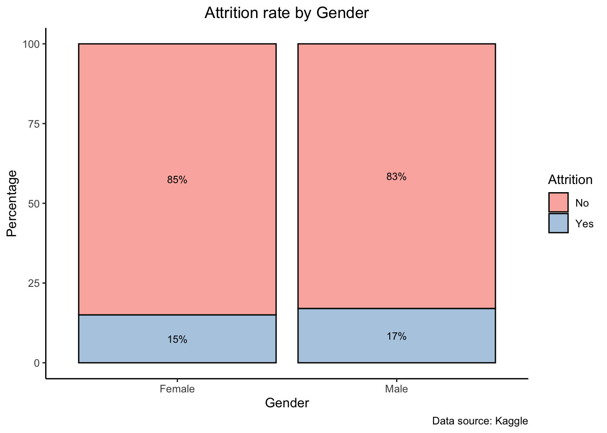
# Attrition rate by Education
df_new %>%
group_by(Education, Attrition) %>%
summarise(cases = n()) %>%
mutate(percentage = (cases/sum(cases))*100,
percentage = round(percentage, 0)) %>%
ggplot(aes(x=Education, y=percentage, fill=Attrition)) +
geom_col(color="black") + theme_bw() +
geom_text(size=3, position=position_stack(vjust=0.5),
aes(label=paste0(percentage, "%"))) +
scale_fill_brewer(palette="Pastel1") +
theme(panel.border = element_blank(),
axis.line = element_line(color="black"),
panel.grid = element_blank(),
plot.title = element_text(hjust=0.5)) +
labs(title = "Attrition rate by Education",
caption = "Data source: Kaggle",
y = "Percentage")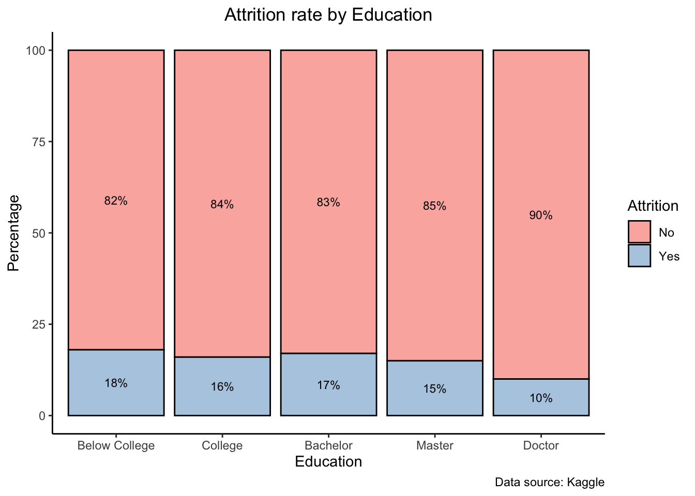
# Attrition rate by MaritalStatus
options(dplyr.summarise.inform=F)
df_new %>%
group_by(MaritalStatus, Attrition) %>%
summarise(cases = n()) %>%
mutate(percentage = (cases/sum(cases))*100,
percentage = round(percentage, 0)) %>%
ggplot(aes(x=MaritalStatus, y=percentage, fill=Attrition)) +
geom_col(color="black") + theme_bw() +
geom_text(size=3, position=position_stack(vjust=0.5),
aes(label=paste0(percentage, "%"))) +
scale_fill_brewer(palette="Pastel1") +
theme(panel.border = element_blank(),
axis.line = element_line(color="black"),
panel.grid = element_blank(),
plot.title = element_text(hjust=0.5)) +
labs(title = "Attrition rate by MaritalStatus",
caption = "Data source: Kaggle",
y = "Percentage")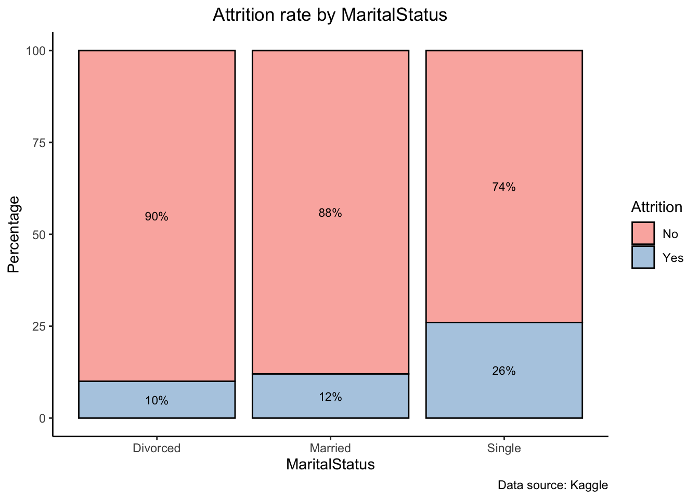
# Attrition rate by RelationshipSatisfaction
df_new %>%
group_by(RelationshipSatisfaction, Attrition) %>%
summarise(cases = n()) %>%
mutate(percentage = (cases/sum(cases))*100,
percentage = round(percentage, 0)) %>%
ggplot(aes(x=RelationshipSatisfaction, y=percentage, fill=Attrition)) +
geom_col(color="black") + theme_bw() +
geom_text(aes(label=paste0(percentage, "%")),
size=3, position=position_stack(vjust=0.5)) +
scale_fill_brewer(palette = "Pastel1") +
labs(title = "Attrition by RelationshipSatisfaction",
caption = "Data source: Kaggle",
y = "Percentage") +
theme(plot.title=element_text(hjust=0.5),
axis.line=element_line(color="black"),
panel.grid=element_blank(),
panel.border=element_blank())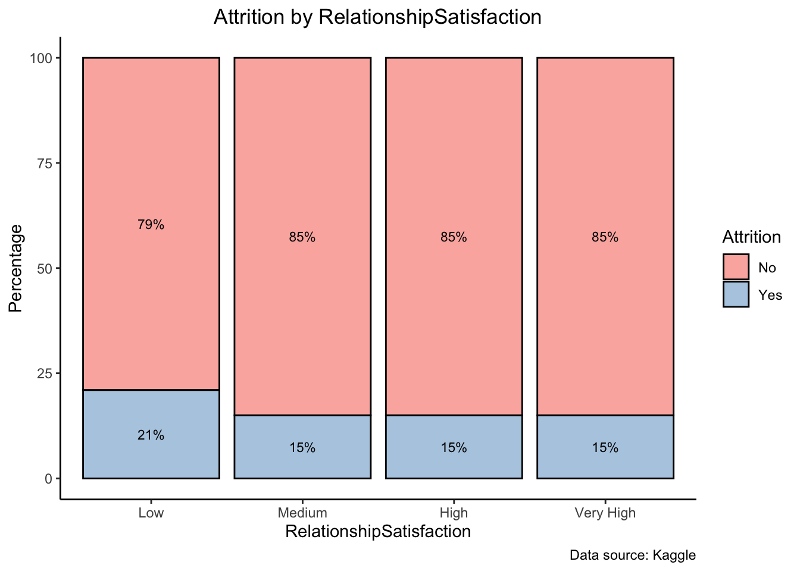
# Attrition rate by Age
ggplot(df_new, aes(x=Age)) +
geom_density(aes(fill=Attrition, color=Attrition),
alpha=0.5) +
scale_fill_brewer(palette = "Pastel1") +
scale_color_brewer(palette = "Pastel1") +
labs(title="Attrition rate by Age",
caption="Data source: Kaggle") +
theme_bw() +
theme(panel.border = element_blank(),
plot.title = element_text(hjust=0.5),
panel.grid.major.x = element_blank(),
panel.grid.minor.y = element_blank(),
axis.line = element_line(color="black"))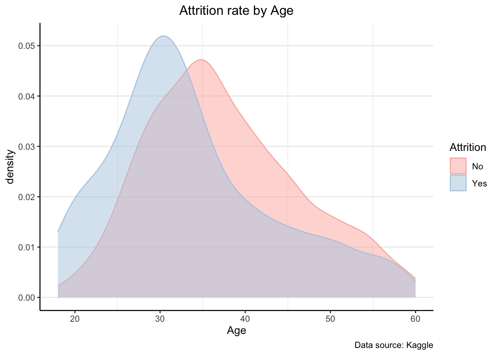
Insights:
Gender: Men and women do not have considerable differences in terms of attrition rate. The difference of male and female employees who leave the company is only 2% higher in male.Education: The attrition rates across different education level are relatively similar, except for doctoral degree. Employees with the advanced degrees are less likely to leave the company.MaritalStatus: By marital status, single employes are the main contributors of the leaver numbers in the company.RelationshipSatisfaction: Except those with low relationship satisfaction, employees with different degrees of satisfaction indexes have exactly the same attrition rate.Age: The distributions of both leavers and stayers are left skewed. But these two groups have different most frequent values: The most frequent ages of leavers are slightly younger than those of stayers.
5 Conclusions
5.1 Summary
Out of 1470 employees, there are 273 people (16.12%) who leave the company within the time period with the median of work duration is 3 years.
In the professional domain, this rate is mainly contributed by Sales Representatives from the Sales Dept and lower job level (junior).
Furthermore, when the perception of work condition is not good (i.e., work-life balance is bad; job involvement is low, environment satisfaction is low, working hours are more than normal), employees are more likely to leave the company as seen on the greater attrition rate.
In the personal domain, although to some extend gender, education, and relationship satisfaction show differences, they tend to show more similarities: The attrition rates are relatively similar, except for marital status.
Taken altogether, in comparison to the personal domain, variables under the professional domains tend to be more contributing to the attrition rate.
5.2 Recommendations for the Human Resource Manager
- Handle the work activity and condition issues such as to reduce the amount of business travels, improve career development because it is the junior level employees who tend to leave the company
- Offering training and mentoring doesn’t seem to be effective for the attrition issue in the company as there are no differences of excellent and outstanding performance rates.
5.3 Directions for a further analysis
I have not yet addressed the salary issues which can be another good indicator for the departure. As offering competitive salary can retain top talent, salary and benefit can further clarify if these factors play significant roles in the employee attrition. In addition to the competitive compensation, a further analysis can take exit interview data into account to get more confident answers for the employee turnover. This data inclusion cannot only verifies my current findings but also can go beyond possibilities.
Note
\(^1\) Terminologically speaking, although both turnover and attrition talk about departures, their main difference is in the terms of voluntariness: While attrition focuses on both voluntary and involuntary leaves, the term turnover usually includes voluntary leaves only. However, as my available data doesn’t distinguish the voluntariness, I will consider them the same. In addition to voluntariness, my other reason to consider them the same within the context of my analysis is the fact that both metrics use similar formula.